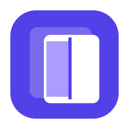
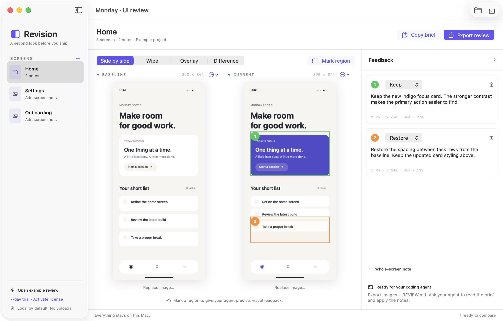
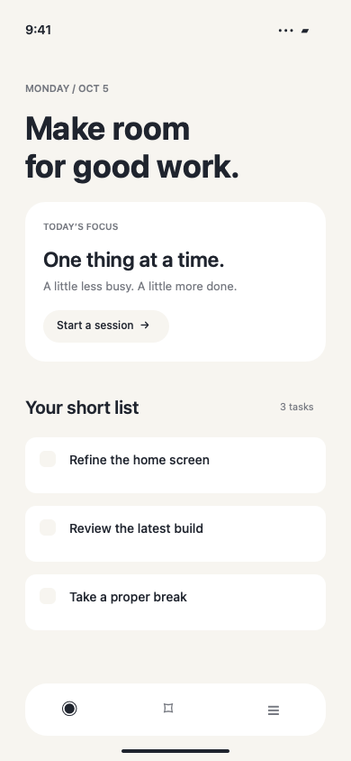
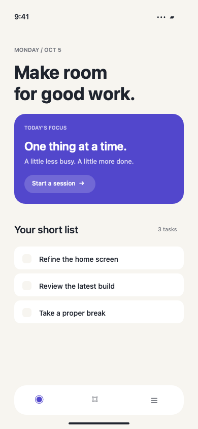

Bring the before and after.
Drop in two screenshots. Organize your home screen, onboarding, and settings in one saved review.

Revisionfor MacA SECOND LOOK BEFORE YOU SHIP
See the before and after. Point out what needs work.
Give your coding agent feedback it can actually follow.
Native Mac app · Your images stay local · No AI subscription required

A SHORTER FEEDBACK LOOP
Drop in two screenshots. Organize your home screen, onboarding, and settings in one saved review.
Compare side by side, wipe between versions, or inspect an overlay. Draw a region and say what to change, keep, or restore.
Export original images, numbered annotations, and a Markdown brief. Give the folder to your agent and ask it to apply your notes.
TRY THE IDEA
The updated focus card looks better. The task spacing got squeezed. Drag the slider to see both versions.
The new indigo focus card.
The breathing room between tasks.


Keyboard shortcuts, saved projects, undo and redo, clipboard import, and local recovery saving.
Revision compares and annotates images locally. You choose what to share with your coding agent.
PNG images and Markdown feedback. No account, proprietary agent connection, or subscription to an AI provider.
A SMALL TOOL YOU CAN OWN
Built for developers who care how the finished app feels.
PLANNED LAUNCH PRICE
$49 one-time · USD
Paid checkout is not open yet. No card required for the preview.
Start with the included example, or bring the screenshots
from the change you’re reviewing right now.
v0.1.0 · macOS 14+ · Apple Silicon & Intel · 7-day export trial
Developer-signed preview. Apple notarization is pending, so macOS may block opening it. If you prefer, wait for the notarized release.
Release status & installation notes ↗No. This first version works with screenshots you import. It helps you compare and write feedback; your coding agent makes code changes. Automatic capture and code editing are not included.
The exported folder contains REVIEW.md, your original screenshots, annotated images, and a saved review project. Ask your agent to read REVIEW.md, inspect the images, and apply only the requested changes.
No. Use screenshots taken at the same dimensions and UI state for accurate comparisons. Revision warns when dimensions differ. Overlay modes stretch the baseline to the current image dimensions.
You can still open, compare, annotate, and save projects. Copying feedback and exporting bundles require an activated license. Paid checkout is being prepared; this preview is for trying the workflow.